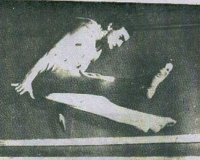

Mikolai Kubica (POL)
1969 European AA Bronze Medalist

Medal Total
European Championships: 2 Silver, 3 Bronze
Mikolai was born on October 27, 1945 in Radlin, Poland. His two brothers, Wilhelm (older) and Szylweszter (younger), were also world-class gymnasts. They were coached by Henrik Gaca in Krakow. The three brothers competed together at the 1970 World Championships and the 1972 Olympics!
Competition Results
1963
GDR-POL Dual Meet: 1st Team, 4th AA
1964
GDR-POL Dual Meet: 1st Team, 3rd AA
Olympic Games: 5th Team, 16th AA
1965
Europe-Japan Dual Meet (Essen): 2nd Team, 3rd AA
European Championships: 8th AA, 5th FX, 5th R, 5th V, 6th PB
POL-GDR Dual Meet: 1st Team, 2nd AA
POL-TCH Dual Meet: 1st AA
1966
POL-GDR Dual Meet: 1st Team, 4th AA
World Championships: 5th Team, 14th AA
1967
European Championships: 5th AA, 3rd FX, 3rd R, 5th PH,
5th V, 5th HB
USSR-GDR-POL: 2nd Team, 3rd AA
1968
Olympic Games: 5th Team, 13th AA
1969
European Championships: 3rd AA, 2nd R, 2nd V, 4th FX,
4th PH, 4th PB
1970
World Championships: 5th Team, 15th AA
1972
Olympic Games: 4th Team
1973
Blume Memorial: 6th AA
European Championships: 7th AA, 4th V, 6th PH
1974
Blume Memorial: 3rd AA
This page was created on December
23, 2004 and was last updated on September 1, 2020.
© Gymn Forum